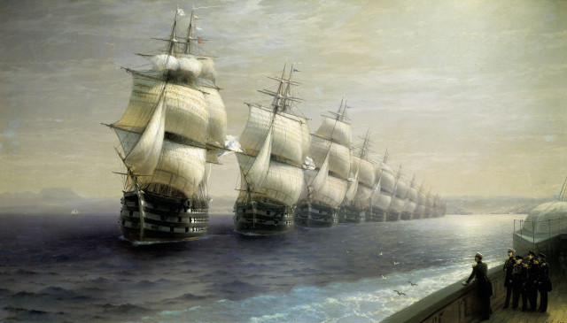

 |
| И. АЙВАЗОВСКИЙ. Смотр Черноморского флота в 1849 году. (кликабельно) |
«Наконец настал благополучный ветр. Мы снялись с якоря и пошли в путь. Движение судов, пушечная пальба с крепостей, усыпанная народом пристань — привели государя в такое восхищение, что он казался вне себя от удовольствия. Однакож восторг сей был умерен случившеюся неприятностью: стопушечный корабль адмирала Круза, при съеме с якоря, приткнулся к мели и принужден был на ней остаться. Сверх того, при повелении Флоту лечь в линию, три корабля, под начальством контр-адмирала Повалишина, приметным образом отделились от прочих, составя как бы некую особую часть. Павел был сим недоволен. Между тем появилась, идущая с моря, ревельская эскадра. Ветр опять сделался нам противен. Мы, не доходя Красной горки, легли на якорь. Государь приказал ревельской эскадре сделать сигнал — лечь в линию. Она стала строиться. Косвенный путь ее лежал так, что хотя первый корабль довольно высоко проходил мимо нас на ветре, но из последующих за ним каждый понемногу к нам приближался, так что последний из них, удерживая линию, должен был идти подле самого носа нашего фрегата. Государь, приметя сие, спросил у меня: — „Пройдет ли этот корабль мимо нас?" — Я отвечал: — „Кажется пройдет." — Он успокоился ; но, чрез две или три минуты, обратился опять ко мне с тем же вопросом. Я отвечал: - „Если не пройдет, то спустится к нам под корму." — Он замолчал; но беспокойство его было приметно. Между тем, на корабле прибавили еще один парус. Я сказал ему: — „Вон прибавляют парусов, чтоб, усиля ход, пройти у нас перед носом." — Корабль стал приближаться. Павел, не спуская с него глаз, с нетерпением и громко возобновил мне свой вопрос: — «Да пройдет ли он мимо нас?» — Чтоб успокоить его, я сам, возвыся голос, отвечал ему: — «Здесь, на фрегате, висит штандарт; а там, на кора6ле, смотрят на него тысяча глаз: чегож опасаться?» — Слова мои, казалось, несколько его убедили; но приближающаяся с надутыми парусами громада снова привела его в страх; так что он, через минуту, оборотясь ко мне, с грозною нетерпеливостью закричал: — „Сигнал, сударь, ему! чтоб он спустился!» — Не находя сего ни нужным, ни приличным, я хотел было немного помедлить; но он, топнув ногою, повторил с гневом: — „Сигнал, говорю я!" — В самую эту минуту, корабль начал спускаться. — „Вон", сказал я, „изволите видеть: он и без того спускается.» — Павел так сему обрадовался, что приказал мне изъявить ему свою благодарность.»
Обвинять Павла в трусости на основании этого эпизода вряд ли стоит. Я не смог найти изображений флотских маневров конца XVIII века. Поэтому привожу известную картину Айвазовского, изображающую кильватерный строй кораблей Черноморского флота полвека спустя. Если представить, что огромная туша парусного корабля, весьма условно управляемая при сильном ветре, движется прямо на тебя, то даже у человека с сильными нервами холодок в груди появится.
Но посмотрим за дальнейшим развитием событий.
«Он весьма доволен был движениями ревельской эскадры и велел сигналом позвать к себе вице-адмирала Пушкина, приготовя надеть на него александровский орден. Пушкин едет. Орден вынесен на серебряном блюде. Великие князья и все мы стоим вокруг государя. Вдруг оборачивается он к графу Кушелеву и говорит: — „Да вить это тот Пушкин, что был под Выборгом? Как же я дам ему орден?»
Здесь необходимо небольшое пояснение.
Выборгское морское сражение 22 июня 1790 года, произошло между русским и шведским флотами во время русско-шведской войны 1788—90гг. После неудачного сражения у Красной Горки шведский флот под командованием короля Густава III с 26 мая был блокирован в Выборгском заливе русским флотом во главе с адмиралом В. Я. Чичаговым. В ходе тяжелого сражения, называемого иногда даже «Трафальгаром Балтики», шведам удалось прорвать блокаду и уйти в Свеаборг. Преследование шведов было организовано с опозданием и велось недостаточно решительно, хотя Чичагов и шел за ними до самого Свеаборга. Тем не менее грандиозные масштабы столкновения и многочисленные трофеи позволили адмиралу В.Я. Чичагову представить Выборгское сражение в выгодном для себя свете. В результате Екатерина Великая удостоила адмирала высшей боевой награды — ордена Св. Георгия I-й степени. В.Я. Чичагов остался единственным в истории моряком, удостоенным такой степени отличия.
Пушкин, имевший в Выборгском сражении под своим командованием передовой отряд нашего флота, получил приказание сняться с якоря и напасть на бегущего неприятеля. Но медленное снятие с якоря и вялое движение кораблей Пушкина привело к тому, что шведы опередили его и догнать их уже не было возможности. Это упущение официально не было поставлено Пушкину в вину, дабы не омрачать общей победной атмосферы. Тем не менее, Екатерина, наградившая высокими наградами всех командиров, отметившихся под Выборгом, пожаловала Пушкину лишь орден Св. Анны. Павел сначала забыл об этом обстоятельстве, а вспомнил о нем, когда Пушкин уже подходил к фрегату.
«Кушелев подбежал к нему и стал упрашивать: — „Государь, помилуйте! забудьте прошедшее! не посрамите его при стольких свидетелях» — Павел, хотя казалось и убедился просьбою его, однакож и после того неоднократно, обращаясь к нему, повторял слова свои: — „Как мне дать ему орден?» — Кушелев всякий раз снова его упрашивал. Наконец Пушкин взошел на фрегат, и государь надел на него приготовленную ленту. Потом позваны были начальники кронштадтской эскадры. Я опасался за Повалишина, что государь вспомнит о сделанном им разрыве линии, во время движения флота, и крайне удивился что Повалишин сам начал о том речь. Он сказал государю : — „Я чаю, ваше величество изволили приметить, что я с тремя кораблями моими отделился от линии, держась ближе к морю. Я сделал это по той причине, что увидел идущие с моря военные суда; и хотя не сомневался, что это наши ревельские корабли, однакож предполагая, что может быть вместо их идет какой-либо враждебный нам флот, рассудил за нужное взять такое положение, чтоб мне первому остановить его и не допустить приблизиться к фрегату вашего величества." — Государь был сим объяснением весьма доволен и, вместо гнева, изъявил ему свое благоволение.»
Один из моих старых начальников, участник и герой войны, говорил в таких случаях: «Врет как на войне». Но на что ни пойдешь ради милости монарха! Благо времени придумать версию у Повалишина было достаточно.